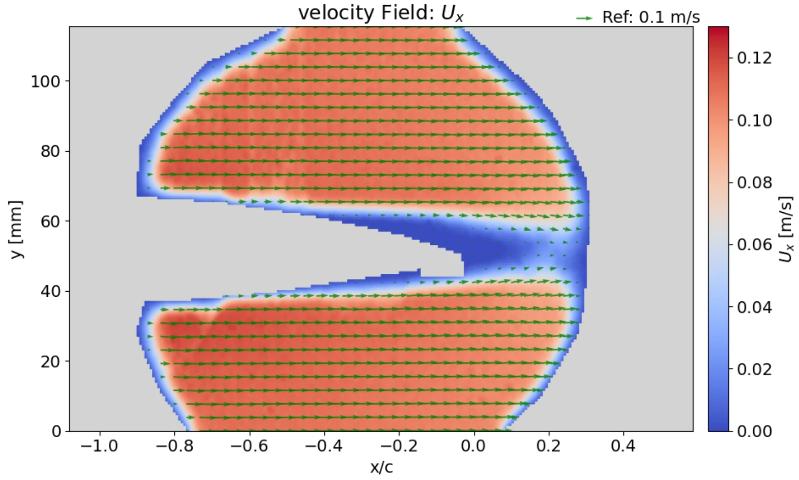

The problem with laser-sheet PIV
Conventional PIV illuminates a thin plane of seeded flow with a laser sheet and tracks the particles between frames. It works, and it is the standard tool, but the geometry fights you: anything solid in the flow casts a shadow, so the region immediately behind a body, often the region you care most about, goes dark. On a thick aerofoil with a Gurney flap, that is exactly where the interesting flow is.
Retroreflective PIV inverts the lighting. Instead of a sheet cutting through the flow, the particles are imaged against a retroreflective background material, which returns light back along the incident direction. The question this project set out to answer is whether that arrangement can resolve real, usable velocity fields, not just a pretty picture.
Test setup
- Closed-loop water tunnel, thick aerofoil section fitted with a Gurney flap
- High-resolution camera, JAI GO-2400C-USB, imaging tracer particles against a retroreflective background
- Five angles of attack crossed with five tunnel speeds, a 5×5 test matrix
- A conventional laser-sheet PIV case run for comparison



What it resolved
Across the full test matrix the technique resolved coherent velocity fields: the behaviour of the flow over the aerofoil, enhanced vorticity near the flap, and the wake patterns behind the section. The main wake trends showed reasonable agreement both with the conventional PIV comparison and with relevant literature data.
The advantage over the laser sheet showed up as expected. Retroreflective lighting enabled full body visualisation with no shadowing, which is difficult to achieve with traditional laser-sheet PIV.
Where the work stops being valid
Quantitative accuracy was limited by uncalibrated flow speed: the tunnel was driven by pump frequency rather than a calibrated velocity, so the global velocity scale carries an unresolved offset. Along with near-wall resolution, that is the dominant source of uncertainty in the results.
The honest conclusion is therefore bounded. The method captures the main flow behaviour and provides useful derived quantities, but in this implementation those remain more suitable for qualitative and semi-quantitative interpretation than for absolute numbers.
Improving calibration, and optimising seeding and illumination, to raise quantitative accuracy and extend the method to viewing and analysing a wider range of components.
Abstract
This work aimed to validate a retroreflective particle image velocimetry (PIV) approach for capturing full-field flow around a thick aerofoil with a Gurney flap. In a closed-loop water tunnel, a high-resolution camera (JAI GO-2400C-USB) imaged tracer particles against a retroreflective background material. Across a range of five angles of attack and five tunnel speeds, coherent velocity fields were resolved, mainly the behaviour of flow over the aerofoil, enhanced vorticity near the flap, and wake patterns. The main wake trends showed reasonable agreement with a conventional PIV comparison and with relevant literature data. Importantly, the retroreflective lighting enabled full body visualisation with no shadowing, which is difficult with traditional laser-sheet PIV. However, quantitative accuracy was limited by uncalibrated flow speed (pump Hz). The major uncertainties are in the global velocity scale and near-wall resolution. In summary, the study demonstrates that retroreflective PIV can capture the main flow behaviour around the aerofoil and provide useful derived quantities, although these remain more suitable for qualitative and semi-quantitative interpretation in the present implementation. Future work should focus on improving calibration, optimising seeding and illumination to improve quantitative accuracy and enable viewing and analysis on a wider range of components.